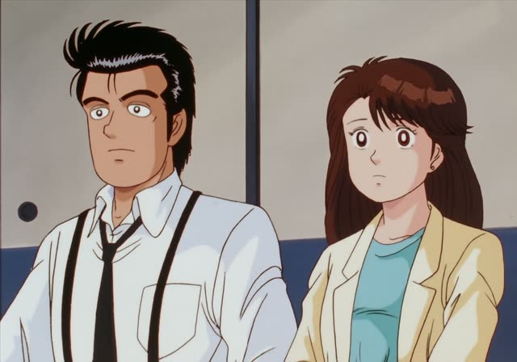
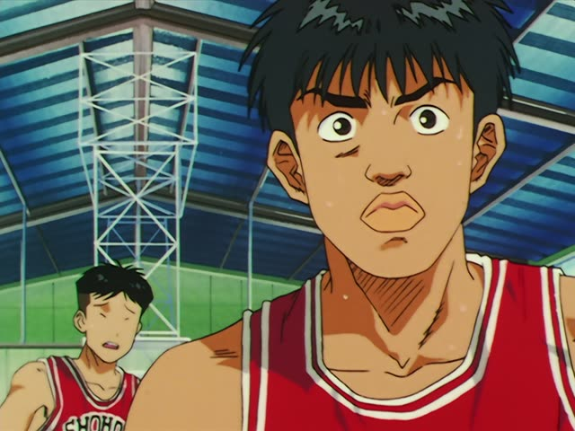

そして・それから

Shirokuma Cafe · Episode 8
そして、ある吹雪の日。
"And then, one snowy day..." [telling a story]
そして means and or and then, at the start of a sentence. It hooks what comes next onto what was just said.
On this card, it moves a story along: this happened, and then, one day in a snowstorm... It answers "What happened next?".
It's the same in polite and casual speech. You hear it a lot in stories and explanations; in chat people often say それから or で.

Oishinbo · Episode 38
それからはずっとニューヨーク暮らしなんです。
"Since then, I've been living in New York."
それから is "and then" or "after that": the next thing in time. With は, それからは is "from then on".
Quick Examples
Telling a friend about your morning.
朝ご飯を食べました。それから、学校に行きました。
"I had breakfast. Then I went to school."
それから = after that.
PoliteIntroducing yourself.
私は学生です。そして、カフェで働いています。
"I'm a student. And I work at a café."
PoliteTelling a friend what to buy.
卵と牛乳。それから、パンも。
"Eggs and milk. Oh, and bread too."
それから adds one more thing.
CasualDescribing your hotel room.
部屋は広い。そして、すごく静か。
"The room is big. And really quiet."
CasualWith and without
部屋は広いです。静かです。
"The room is big. It's quiet." Two loose facts.
部屋は広いです。そして、静かです。
"The room is big. And it's quiet." The second fact is added on.
Examples from Media

Goblin Slayer · Episode 12
そしてあるとき、神々は気がつきました。
"And then one day, the gods noticed."
そして = "and then", moving the story on. 気がつく = notice.

NHK やさしいことばニュース · 暑い日が続く 熱中症に気をつけて
そして、のどが乾いていなくても、水を飲んでください。
"And drink water even when you're not thirsty."
Quartet · Episode 9
それから ずっと 早乙女です。
"And I've been Saotome ever since."
それから: after that.
Last Samurai Standing · Episode 1
そして 遊びには掟が付き物です。
"And every game comes with rules."
Goblin Slayer · Episode 12
そして あるとき 神々は気がつきました。
"And one day, the gods realized something."

Legal High · Episode 1
そして まんまと成功した。
"And it worked, just like that."
First the plan, then そして: it worked.

Slam Dunk · Episode 18
そして強い。
"And strong."
そして adds one more thing.

Shirokuma Cafe · Episode 29
それから本も出したんだ。
"And then I also put out a book."
それから = and after that.
Further Reading
A Dictionary of Basic Japanese Grammar
Entry "soshite" · pp. 422–423
Entry "sore kara" · pp. 416–419